(23) Simulation – generate#
Motivation: This was using SimulationMult. I decided to let go of this in favor of Simulation.
Show code cell source
# HIDE CODE
import os, sys
from copy import deepcopy as dc
from os.path import join as pjoin
from IPython.display import display, IFrame, HTML
# tmp & extras dir
git_dir = pjoin(os.environ['HOME'], 'Dropbox/git')
extras_dir = pjoin(git_dir, 'jb-MTMST/_extras')
fig_base_dir = pjoin(git_dir, 'jb-MTMST/figs')
tmp_dir = pjoin(git_dir, 'jb-MTMST/tmp')
# GitHub
sys.path.insert(0, pjoin(git_dir, '_MTMST'))
from model.opticflow import *
# warnings, tqdm, & style
warnings.filterwarnings('ignore', category=DeprecationWarning)
from tqdm.notebook import tqdm
from rich.jupyter import print
%matplotlib inline
set_style()
Show code cell source
# HIDE CODE
def show_thetaphi(t, p):
fig, axes = create_figure(1, 4, (13, 2.5), tight_layout=True)
im = axes[0].imshow(t, cmap='nipy_spectral')
plt.colorbar(im, ax=axes[0])
im = axes[2].imshow(p, cmap='hsv', vmin=0, vmax=2*np.pi)
plt.colorbar(im, ax=axes[2])
for ax in [axes[0], axes[2]]:
ax.invert_yaxis()
ax.tick_params(labelsize=10)
ax.set(
xticks=of.ticks,
yticks=of.ticks,
xticklabels=of.ticklabels,
yticklabels=of.ticklabels,
)
axes[1].axvline(np.deg2rad(fov), color='r', ls='--', label=f'{fov} deg')
sns.histplot(
t.ravel(), ax=axes[1], label=r'$\theta$',
bins=np.linspace(0, np.pi/2, 91), stat='count')
sns.histplot(
p.ravel(), ax=axes[3], label=r'$\phi$', color='C0',
bins=np.linspace(0, 2*np.pi, 37), stat='count')
sns.histplot(
p[t <= np.deg2rad(fov)], ax=axes[3], label=r'$\phi$' + f' (<{fov})', color='C1',
bins=np.linspace(0, 2*np.pi, 37), stat='count')
for ax in [axes[1], axes[3]]:
ax.set_ylabel('')
ax.legend(fontsize=8, loc='upper left')
plt.show()
def show_xyzd(x, y, z, d, cmap='Spectral', grid=False):
fig, axes = create_figure(1, 4, (12, 2.5), 'all', 'all', tight_layout=True)
im = axes[0].imshow(x, cmap=cmap)
plt.colorbar(im, ax=axes[0])
axes[0].set_title(r'$\mathcal{x}$', y=1.02, fontsize=17)
im = axes[1].imshow(y, cmap=cmap)
plt.colorbar(im, ax=axes[1])
axes[1].set_title(r'$\mathcal{y}$', y=1.02, fontsize=17)
im = axes[2].imshow(z, cmap=cmap)
plt.colorbar(im, ax=axes[2])
axes[2].set_title(r'$\mathcal{z}$', y=1.02, fontsize=17)
im = axes[3].imshow(d, cmap=cmap)
plt.colorbar(im, ax=axes[3])
axes[3].set_title(r'$\mathcal{d} = \sqrt{\mathcal{x}^2+\mathcal{y}^2+\mathcal{z}^2}$', y=1.02, fontsize=14)
axes[-1].invert_yaxis()
for ax in axes.flat:
ax.tick_params(labelsize=10)
ax.set(
xticks=of.ticks,
yticks=of.ticks,
xticklabels=of.ticklabels,
yticklabels=of.ticklabels,
)
if grid:
add_grid(axes)
plt.show()
def hist_xyzd(x, y, d, z=None, bins=30):
kws = {
'bins': bins,
'stat': 'percent',
}
fig, axes = create_figure(2, 4, (13, 5), sharey='all', constrained_layout=True)
sns.histplot(x.ravel(), ax=axes[0, 0], **kws)
sns.histplot(y.ravel(), ax=axes[0, 1], **kws)
if z is not None:
sns.histplot(z.ravel(), ax=axes[0, 2], **kws)
sns.histplot(d.ravel(), ax=axes[0, 3], **kws)
sns.histplot(x[of.theta < np.deg2rad(fov)], ax=axes[1, 0], **kws)
sns.histplot(y[of.theta < np.deg2rad(fov)], ax=axes[1, 1], **kws)
if z is not None:
sns.histplot(z[of.theta < np.deg2rad(fov)], ax=axes[1, 2], **kws)
sns.histplot(d[of.theta < np.deg2rad(fov)], ax=axes[1, 3], **kws)
axes[0, 0].set_title(r'$x$', y=1.02, fontsize=17)
axes[0, 1].set_title(r'$y$', y=1.02, fontsize=17)
axes[0, 2].set_title(r'$z$', y=1.02, fontsize=17)
axes[0, 3].set_title(r'$d$', y=1.02, fontsize=17)
plt.show()
def show_velocity(v, cmap='Spectral_r', grid=False):
rho, phi = vel2polar(v)
vminmax = np.max(np.abs(v))
kws = dict(
cmap='bwr',
vmax=vminmax,
vmin=-vminmax,
)
fig, axes = create_figure(1, 4, (12, 2.5), 'all', 'all', tight_layout=True)
im = axes[0].imshow(v[..., 0], **kws)
plt.colorbar(im, ax=axes[0])
axes[0].set_title(r'$v_x$', y=1.02, fontsize=17)
im = axes[1].imshow(v[..., 1], **kws)
plt.colorbar(im, ax=axes[1])
axes[1].set_title(r'$v_y$', y=1.02, fontsize=17)
im = axes[2].imshow(rho, cmap=cmap)
plt.colorbar(im, ax=axes[2])
axes[2].set_title(r'$\rho$', y=1.02, fontsize=17)
im = axes[3].imshow(phi, cmap='hsv', vmin=0, vmax=2*np.pi)
plt.colorbar(im, ax=axes[3])
axes[3].set_title(r'$\phi$', y=1.02, fontsize=14)
axes[-1].invert_yaxis()
for ax in axes.flat:
ax.tick_params(labelsize=10)
ax.set(
xticks=of.ticks,
yticks=of.ticks,
xticklabels=of.ticklabels,
yticklabels=of.ticklabels,
)
if grid:
add_grid(axes)
plt.show()
from skimage.transform import resize
def show_opticflow(v, dims=None):
dims = dims if dims else [2, 4, 8]
fig, axes = create_figure(1, 3, (12, 4), constrained_layout=True)
for i, d in enumerate(dims):
axes[i].quiver(
range(-d, d + 1),
range(-d, d + 1),
resize(v[..., 0], (2*d+1,) * 2),
resize(v[..., 1], (2*d+1,) * 2),
)
ax_square(axes)
plt.show()
return
Setup#
fov = 45
res = 1
fix = np.array([
[0, 0],
[0.4, 0],
[0, 0.4],
[0.4, 0.4],
])
of = OpticFlow(fov, res).compute_coords(fix)
theta, phi = self2polar(of.alpha[..., 0], of.alpha[..., 1])
show_thetaphi(theta, phi)

Sampler#
fov = 45
dim = 19
res = 2 * fov / (dim - 1)
self = sim = SimulationMult(
fov=fov,
n_fix=60,
n_slf=60,
n_obj=60,
verbose=True,
).uniform()
29.7 % of total simulations accepted (using fov_ratio = 0.8)
self.acc.sum(), len(self.acc)
(64200, 216000)
%%time
of = OpticFlow(fov, res).compute_coords(self.fix[0])
alpha_dot = of.compute_flow(self.vel_slf, self.pos_obj, self.vel_obj)
alpha_dot.shape
CPU times: user 171 ms, sys: 109 ms, total: 279 ms
Wall time: 277 ms
(1, 19, 19, 2, 60, 60)
def get_alpha_dot(f):
of = OpticFlow(fov, res).compute_coords(f)
return of.compute_flow(self.vel_slf, self.pos_obj, self.vel_obj)
%%time
with joblib.parallel_backend('multiprocessing'):
alpha_dot = joblib.Parallel(n_jobs=-1)(
joblib.delayed(get_alpha_dot)
(f) for f in self.fix
)
CPU times: user 4.71 s, sys: 3.53 s, total: 8.24 s
Wall time: 8.83 s
alpha_dot = np.concatenate(alpha_dot)
alpha_dot.shape
(60, 19, 19, 2, 60, 60)
stim = flatten_arr(np.transpose(
alpha_dot, (0, -2, -1, 1, 2, 3)), ndim_end=3)
stim = stim[sim.acc]
stim.shape
(64200, 19, 19, 2)
ii = 12700
i, j, k = sim.idxs[np.where(sim.acc)[0][ii]]
i, j, k
(12, 34, 9)
show_velocity(stim[ii])
show_opticflow(stim[ii])
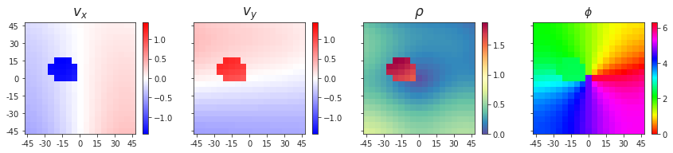
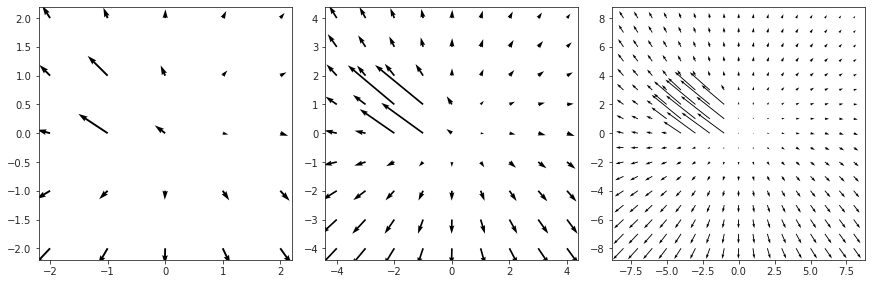
rho, theta = vel2polar(stim)
rho.shape
(64200, 19, 19)
fig, axes = create_figure(1, 2, (10, 3))
sns.histplot(rho.ravel(), stat='percent', ax=axes[0])
sns.histplot(rho.ravel(), stat='percent', ax=axes[1])
for ax in axes.flat:
ax.axvline(0.9, color='r', ls='--')
axes[1].set_yscale('log')
plt.show()
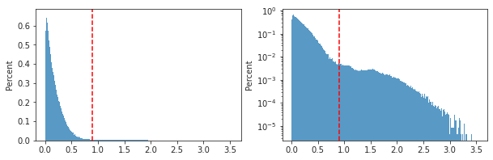
ax = sns.histplot(np.log(rho[rho.nonzero()]))
ax.set_xlim(-10, 2);
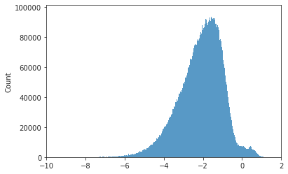
ii, xx, yy = np.unravel_index(np.argmax(rho), rho.shape)
ii, xx, yy
(14220, 4, 18)
show_velocity(stim[ii])
show_opticflow(stim[ii])
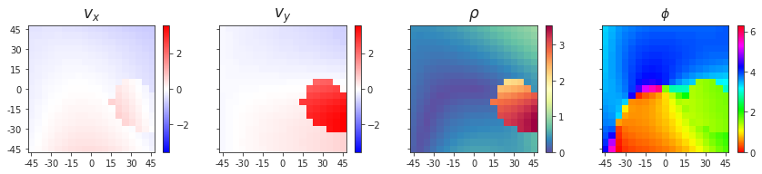
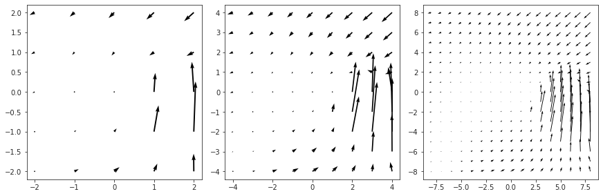
norm = sp_lin.norm(stim, axis=3).mean(1).mean(1)
norm.shape
(64200,)
ax = sns.histplot(norm)
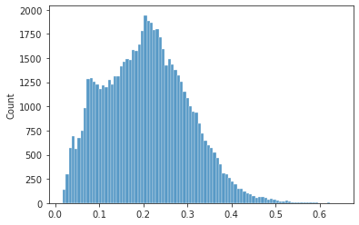
# use to be this: (when pos_obj[2] was close to 0.2)
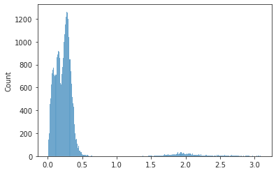
sns.histplot(self.pos_obj[2], bins=np.linspace(0.5, 1, 51));
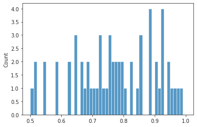
argsort = np.argsort(norm)
ii = np.unravel_index(argsort[-1], norm.shape)
i, j, k = sim.idxs[np.where(sim.acc)[0][ii]]
ii, (i, j, k)
((29881,), (26, 56, 54))
show_velocity(stim[ii])
show_opticflow(stim[ii])
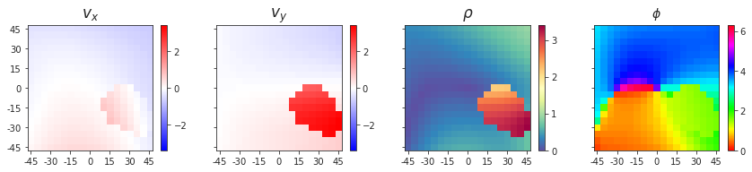
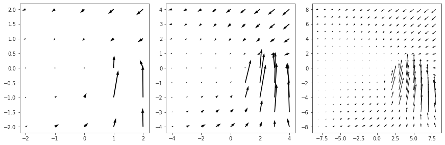
norm[ii]
0.6441884583814518
ii = np.unravel_index(argsort[0], norm.shape)
i, j, k = sim.idxs[np.where(sim.acc)[0][ii]]
ii, (i, j, k)
((40446,), (37, 20, 14))
show_velocity(stim[ii])
show_opticflow(stim[ii])
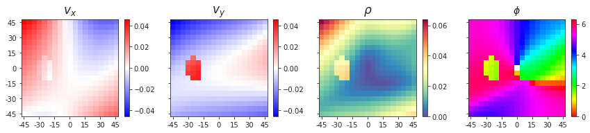
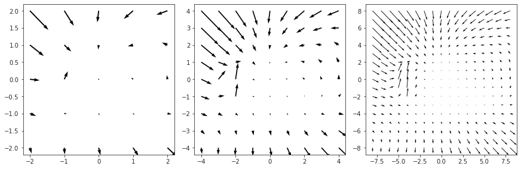
norm[ii]
0.01715262288160816
n = 160
bins = np.linspace(-4, 4 + 8 / n, n + 2) - 4 / n
fig, axes = create_figure(2, 2, figsize=(10, 6), sharex='all', sharey='col', constrained_layout=True)
for i in range(2):
sns.histplot(stim[..., i].ravel(), bins=bins, stat='percent', ax=axes[i, 0])
sns.histplot(stim[..., i].ravel(), bins=bins, stat='percent', ax=axes[i, 1])
axes[i, 0].set_ylabel(f"v_{i}")
axes[i, 1].set_yscale('log')
plt.show()
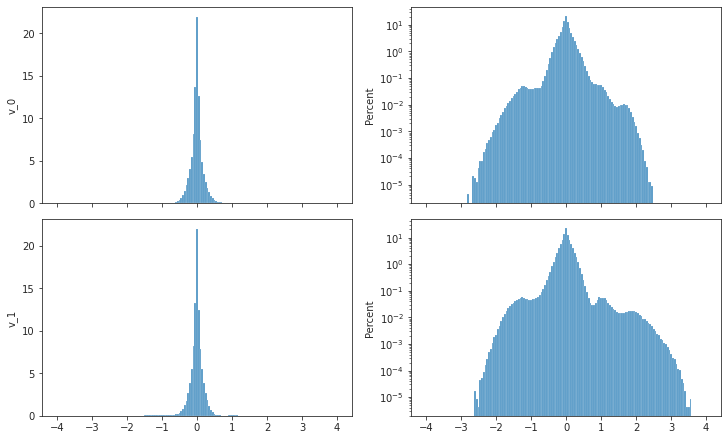
n = 40
bins = np.linspace(-4, 4 + 8 / n, n + 2) - 4 / n
bins
array([-4.1, -3.9, -3.7, -3.5, -3.3, -3.1, -2.9, -2.7, -2.5, -2.3, -2.1,
-1.9, -1.7, -1.5, -1.3, -1.1, -0.9, -0.7, -0.5, -0.3, -0.1, 0.1,
0.3, 0.5, 0.7, 0.9, 1.1, 1.3, 1.5, 1.7, 1.9, 2.1, 2.3,
2.5, 2.7, 2.9, 3.1, 3.3, 3.5, 3.7, 3.9, 4.1])
fig, axes = create_figure(2, 2, figsize=(10, 6), sharex='all', sharey='col', constrained_layout=True)
for i in range(2):
sns.histplot(stim[..., i].ravel(), bins=bins, stat='percent', ax=axes[i, 0])
sns.histplot(stim[..., i].ravel(), bins=bins, stat='percent', ax=axes[i, 1])
axes[i, 0].set_ylabel(f"v_{i}")
axes[i, 1].set_yscale('log')
plt.show()
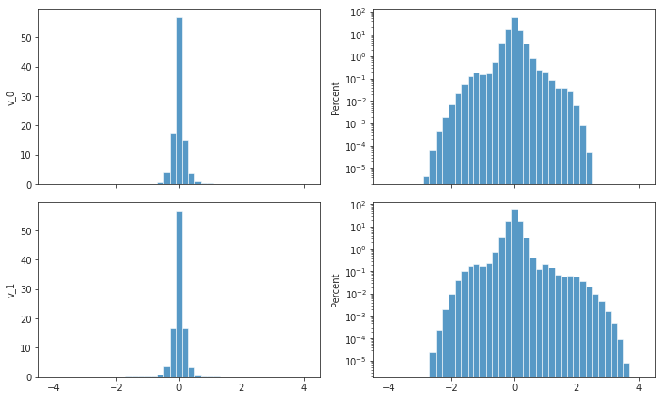
n = 40
bins = np.linspace(-1, 1 + 2 / n, n + 2) - 1 / n
bins
array([-1.025, -0.975, -0.925, -0.875, -0.825, -0.775, -0.725, -0.675,
-0.625, -0.575, -0.525, -0.475, -0.425, -0.375, -0.325, -0.275,
-0.225, -0.175, -0.125, -0.075, -0.025, 0.025, 0.075, 0.125,
0.175, 0.225, 0.275, 0.325, 0.375, 0.425, 0.475, 0.525,
0.575, 0.625, 0.675, 0.725, 0.775, 0.825, 0.875, 0.925,
0.975, 1.025])
fig, axes = create_figure(2, 2, figsize=(10, 6), sharex='all', sharey='col', constrained_layout=True)
for i in range(2):
sns.histplot(stim[..., i].ravel(), bins=bins, stat='percent', ax=axes[i, 0])
sns.histplot(stim[..., i].ravel(), bins=bins, stat='percent', ax=axes[i, 1])
axes[i, 0].set_ylabel(f"v_{i}")
axes[i, 1].set_yscale('log')
plt.show()
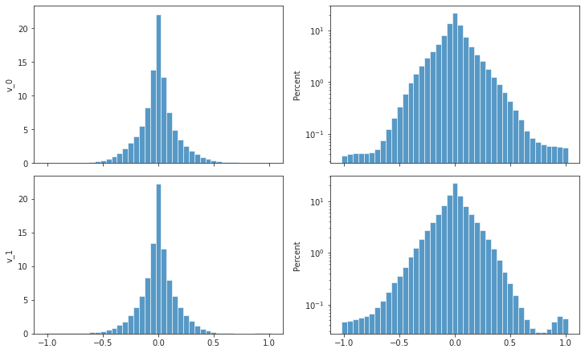
from fitter import Fitter
xxx = rho[:1000]
f = Fitter(xxx[xxx.nonzero()], distributions=['expon', 'gamma', 'powerlaw'], timeout=200)
f.fit()
f.summary()
| sumsquare_error | aic | bic | kl_div | |
|---|---|---|---|---|
| expon | 1.256466 | 1021.624525 | -4.536911e+06 | 0.023733 |
| gamma | 21.278394 | 380.963473 | -3.515537e+06 | 0.517916 |
| powerlaw | 32.034301 | 301.287149 | -3.367853e+06 | 1.086200 |
f = Fitter(rho[rho.nonzero()], distributions=['expon'], timeout=200)
f.fit()
f.summary()
| sumsquare_error | aic | bic | kl_div | |
|---|---|---|---|---|
| expon | 0.771296 | 1399.851848 | -3.990006e+08 | 0.023714 |

f = Fitter(rho[np.logical_and(rho >= 0.02, rho < 1)], distributions=['expon'], timeout=200)
f.fit()
f.summary()
| sumsquare_error | aic | bic | kl_div | |
|---|---|---|---|---|
| expon | 1.344394 | 219.517644 | -3.502942e+08 | 0.003741 |
Correlation structure of generative factors#
g = np_nans((self.acc.sum(), 11))
for ii, idx in enumerate(np.where(self.acc)[0]):
i, j, k = self.idxs[idx]
g[ii, :2] = self.fix[i]
g[ii, 2:5] = self.vel_slf[:, j]
g[ii, 5:8] = self.vel_obj[:, j]
g[ii, 8:11] = self.pos_obj[:, j]
g.shape
(64200, 11)
d = sp_dist.squareform(sp_dist.pdist(g.T, metric='correlation'))
corr = 1 - d
np.fill_diagonal(corr, 0.)
corr.shape
(11, 11)
fig, ax = create_figure(figsize=(10, 8))
sns.heatmap(
corr,
vmin=-1,
vmax=1,
cmap='bwr',
annot=True,
fmt='0.1f',
annot_kws={'fontsize': 12, 'color': 'k'},
linecolor='silver',
linewidths=0.01,
ax=ax,
)
ax_square(ax)
plt.show()

sns.histplot(sp_dist.squareform(corr), bins=np.linspace(-1, 1, 41));

z = np_nans((len(self.idxs), 11))
for idx, (i, j, k) in self.idxs.items():
z[idx, :2] = self.fix[i]
z[idx, 2:5] = self.vel_slf[:, j]
z[idx, 5:8] = self.vel_obj[:, j]
z[idx, 8:11] = self.pos_obj[:, j]
z.shape
(216000, 11)
d = sp_dist.squareform(sp_dist.pdist(z.T, metric='correlation'))
corr = 1 - d
np.fill_diagonal(corr, 0.)
corr.shape
(11, 11)
fig, ax = create_figure(figsize=(10, 8))
sns.heatmap(
corr,
vmin=-1,
vmax=1,
cmap='bwr',
annot=True,
fmt='0.1f',
annot_kws={'fontsize': 12, 'color': 'k'},
linecolor='silver',
linewidths=0.01,
ax=ax,
)
ax_square(ax)
plt.show()
sns.histplot(sp_dist.squareform(corr), bins=np.linspace(-1, 1, 41));
Older plots#
i, j, k = np.unravel_index(np.argmin(norm), norm.shape)
i, j, k
(1, 0, 0)
show_velocity(alpha_dot[i, ..., j, k])
show_opticflow(alpha_dot[i, ..., j, k])
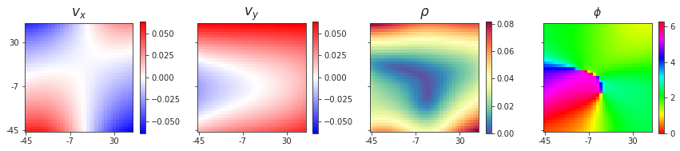
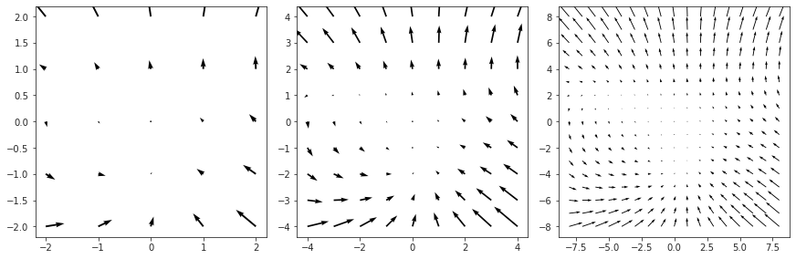
i, j, k = 0, 3, 11
show_velocity(alpha_dot[i, ..., j, k])
show_opticflow(alpha_dot[i, ..., j, k])
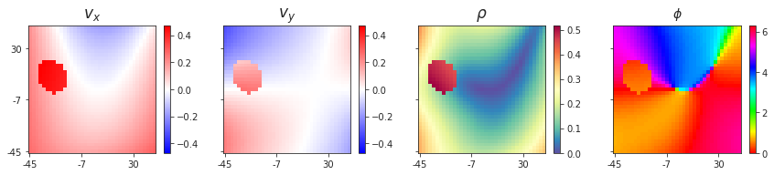
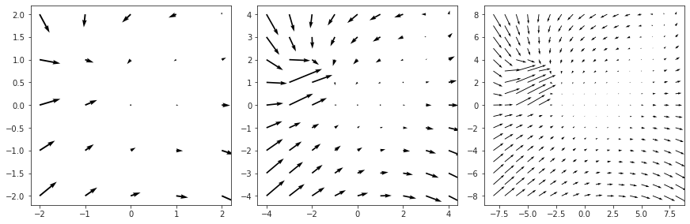
Sample fixation points (OLD, ignore)#
def sample_fix(num: int, rng: np.random.Generator = None):
rng = rng if rng else get_rng()
fix = np_nans((num, 2))
bound = 1 / np.tan(np.deg2rad(fov))
kws = dict(low=-bound, high=bound)
idx = 0
while True:
x = rng.uniform(**kws)
y = rng.uniform(**kws)
if abs(x) + abs(y) < 1:
fix[idx] = x, y
idx += 1
if idx == num:
break
return fix
num = 1000
fix = sample_fix(num, rng)
fig, axes = create_figure(1, 2, (9, 3.5))
sns.histplot(x=fix[:, 0], y=fix[:, 1], ax=axes[0])
sns.histplot(fix.ravel(), ax=axes[1])
ax_square(axes)
plt.show()
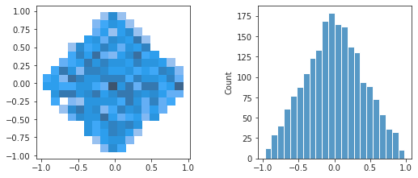
Sample directions (unit vectors)#
x = rng.uniform(-1, 1, 1000)
y = rng.uniform(-1, 1, 1000)
pos = np.stack([x, y], axis=1)
pos.shape
(1000, 2)
ax = sns.scatterplot(x=pos[:, 0], y=pos[:, 1])
ax_square(ax)
<AxesSubplot:>
num = 1000
points = rng.normal(size=(num, 3))
points /= sp_lin.norm(points, axis=1, keepdims=True)
points.shape
(1000, 3)
sns.histplot(points);
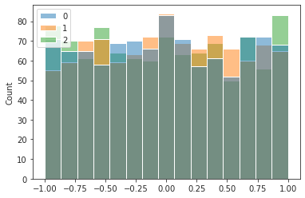
r = cart2polar(points)
collections.Counter(np.round(r[:, 0], 12))
Counter({1.0: 1000})
sns.histplot(r[:, 1]);
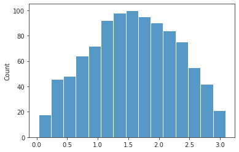
num = 1000
# bound = 1 / np.tan(np.deg2rad(fov))
a = 4
fix_x = 2 * rng.beta(a=a, b=a, size=num) - 1
fix_y = np.zeros_like(fix_x)
for i, x in enumerate(fix_x):
bound = 1 - abs(x)
fix_y[i] = rng.uniform(low=-bound, high=bound)
fix = np.concatenate([
np.expand_dims(fix_x, axis=-1),
np.expand_dims(fix_y, axis=-1),
], axis=-1)
fix.shape
(1000, 2)
sns.histplot(fix.ravel())
<AxesSubplot:ylabel='Count'>

ax = sns.histplot(x=fix[:, 0], y=fix[:, 1])
ax_square(ax)
<AxesSubplot:>
ax = sns.scatterplot(x=fix[:, 0], y=fix[:, 1])
ax_square(ax)
<AxesSubplot:>
sns.histplot(np.abs(fix).sum(1))
<AxesSubplot:ylabel='Count'>
def uniform_diamond(u, v):
while True:
s = random.random()
t = random.random()
in_triangle = s + t <= 1
p = s * u + t * v if in_triangle else (1 - s) * u + (1 - t) * v
yield p
next(uniform_diamond(2, 3))
2.2358407407437593
self.fix
array([[ 0.27392337, -0.46042657],
[ 0.21327155, 0.45899312],
[ 0.08724998, 0.87014485],
[ 0.72635784, 0.08292244],
[-0.40057622, -0.15462556],
[ 0.34124883, 0.29437902],
[ 0.23077022, -0.23264489],
[ 0.37108397, 0.30091855],
[ 0.37689346, -0.22215715],
[ 0.05070864, -0.37951625]])
ax = sns.scatterplot(x=self.fix[:, 0], y=self.fix[:, 1])
sns.scatterplot(x=self.obj_pos[0], y=self.obj_pos[1], color='C1', ax=ax)
ax.set(xlim=(-1, 1), ylim=(-1, 1))
ax_square(ax);
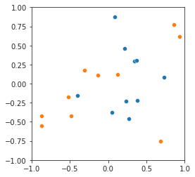